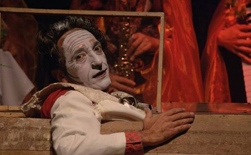
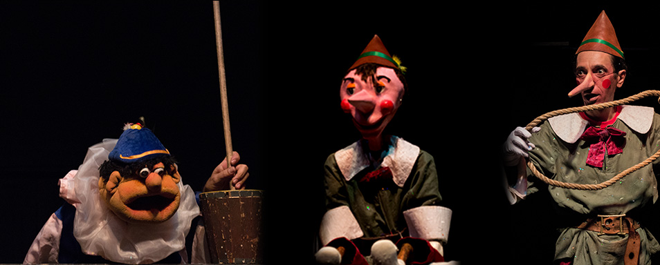

Diego fue tantos y en cada uno fue él
Por Sergio Restrepo
Esta semana ocurrió el milagro que no queríamos y que nadie esperaba, el que ojalá se hubiera podido aplazar 30 años: a Diego Sánchez, parte esencial de las artes escénicas en Colombia, lo recogió el silencio, se ocultó en términos matacandelas o metafísicos. Para mí, salió de la parte del escenario iluminada para el público, se hizo personaje, ahora actúa y vive en el teatro mental de nuestra vida diaria para siempre.

Diego fue tantos y en cada uno fue él, como si ser él fuera una construcción de vivir en otros. Fue diverso, contrario, plural, protagonista y antagonista, fue extra, de reparto, narrador, presentador o conciencia… Yo recuerdo con mucho amor cuando fue Faustroll en Juegos nocturnos y, con él, a mí me entró la ‘Patafísica que me explicó tantas cosas. Lo vi caminar de tú a tú siendo Lucas de Ochoa con Fernando González, lo vi hablarle, regañarlo o inspirarlo. Diego como el Brujo de Otraparte o de Greiff o el maravilloso Pessoa, al que él amaba, fue muchos en él. Su cuerpo no se lleva la presencia de los que fue, él es y seguirá siendo multitud, legión.
Diego, además de otros, fue todo; creó en código la primer página web que en América Latina tuviera un grupo de teatro, fue el diseñador gráfico que, sin proponerlo, se inscribió en el cartelerismo teatral colombiano aprendiendo técnicas y tecnologías y actualizándolas en tiempo presente; nunca dejó de estudiar música, Puerto Candelaria, uno de los mejores grupos de Colombia, lo consideró miembro de su proyecto creativo e inspirador, alpujarrio cuando al Mata le tocó, escribió proyectos, indicadores, planes de acción, atendió el funcionario público de turno y a sus interventores, armó y organizó equipos de diseño, de gestión y de obra para hacerle una mejor casa a su casa, el Matacandelas.
Con Cristóbal Peláez, su director, al que en el teatro de la vida sutilmente dirigía y, como el mismo Cristóbal lo dijo, ninguno fue el padre, el hermano o el maestro del otro. Él y Diego como Fernando González y Andrés Ripoll, vivieron en comunión uno del otro. Y con Diego aplican literales las palabras de Fernando González en la dedicatoria del libro “De los viajes o de las Presencias” que el maestro le regalo a Ripoll: “No se dirá murió, sino, lo recogió el silencio. Y no habrá duelos, sino la fiesta silenciosa, que es silencio”, y él y Cristóbal en esta separación estarán en unión definitiva. Peláez se movió en el cuerpo de Diego en el escenario, habló y dirigió desde él durante 34 años, ahora Diego vive en él, en una separación que es unión definitiva.
El día de la muerte de Diego me puse a disposición de Cristóbal para el oficio que creyera conveniente y me pidió que le ayudara a que Diego fuera enterrado en esta parroquia, en San Ignacio, pues las hermanas habían sugerido Envigado, pueblo del que, a Cristóbal y a Diego, décadas atrás habían desterrado. Le dije “¿por qué aquí?”, me miró a los ojos y me dijo: “esta es nuestra parroquia, nosotros somos del distrito San Ignacio”.

Cuando el cuerpo de Diego entró a su casa, en el escenario ya lo esperaban todos los personajes que él era, entró como Don Manoplas. Creo que es el único muerto que he mirado en mi vida y me ha arrancado ternura. A su llegada arrancó un aplauso con calle de honor hasta el escenario y, el público de esta obra preparada y en montaje durante 34 años, aplaudió sin descanso por más de 20 minutos; se veía que la gente se turnaba para sacudir o soplarse las manos y rapidito reanudaba, era como si el aplauso le estuviera pidiendo a Diego reincorporarse al escenario, volver a actuar el segundo acto o al menos un bis.
Cumplimos el cometido, Diego y todos nosotros caminamos desde el Matacandelas en una comparsa con chirimías y cantos, banderas amarillas y pañuelitos de colores, hasta el Claustro, a la ceremonia con música y homilía hermosísima. Diego fue despedido en su parroquia.